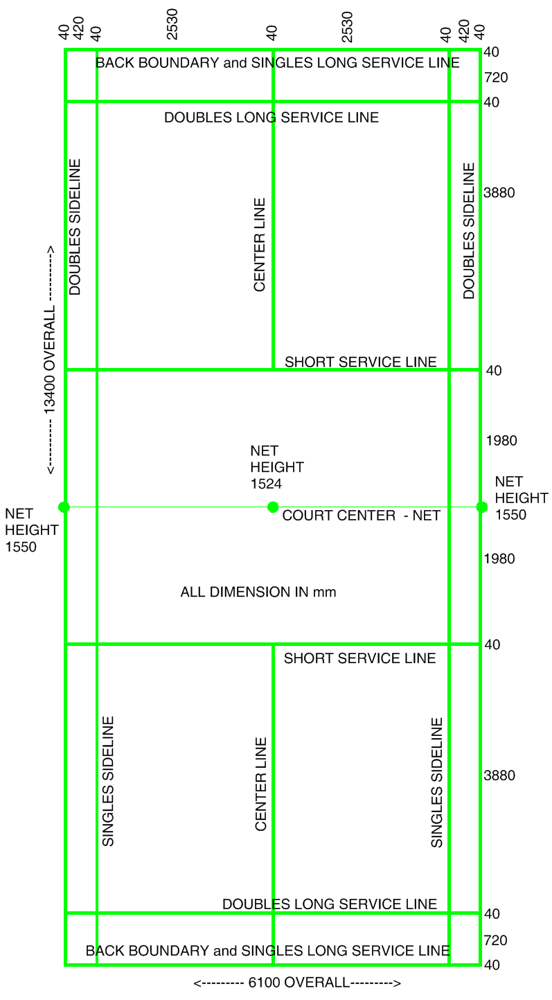

六、国际羽联关于球场规制的要求
国际羽联官网1.1. The court shall be a rectangle marked out with lines 40 mm wide as shown in Diagram A.
1.2. The lines marking out the court shall be easily distinguishable and preferably be coloured white or yellow.
1.3. All the lines shall form part of the area which they define.
1.4. The posts shall be 1.55 metres in height from the surface of the court and shall remain vertical when the net is strained as provided in Law 1.10.
1.5. The posts shall be placed on the doubles side lines as in Diagram A irrespective of whether singles or doubles is being played. The posts or its supports shall not extend into the court beyond the side lines.
1.6. The net shall be made of fine cord of dark colour and even thickness with a mesh of not less than l5 mm and not more than 20 mm.
1.7. The net shall be 760 mm in depth and at least 6.1 metres wide.
1.8. The top of the net shall be edged with a 75 mm white tape doubled over a cord or cable running through the tape. This tape shall rest upon the cord or cable.
1.9. The cord or cable shall be stretched firmly, flush with the top of the posts.
1.10. The top of the net from the surface of the court shall be 1.524 metres at the centre of the court and 1.55 metres over the side lines for doubles.
1.11 There shall be no gaps between the ends of the net and the posts. If necessary, the full depth of the net at the ends shall be tied to the posts.
